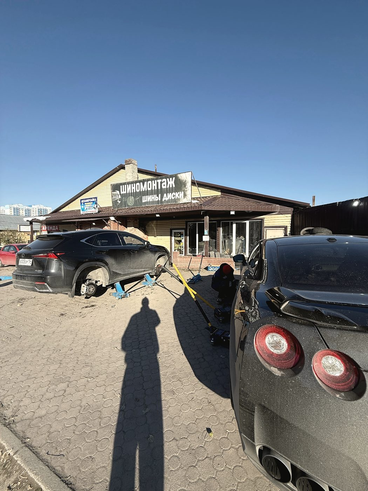
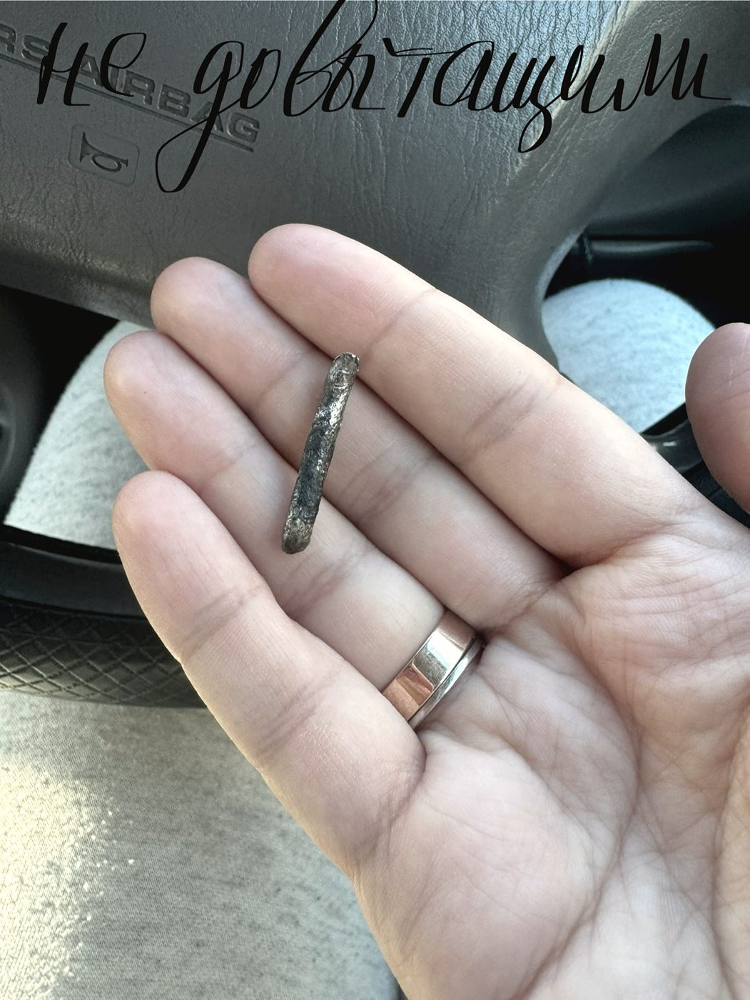
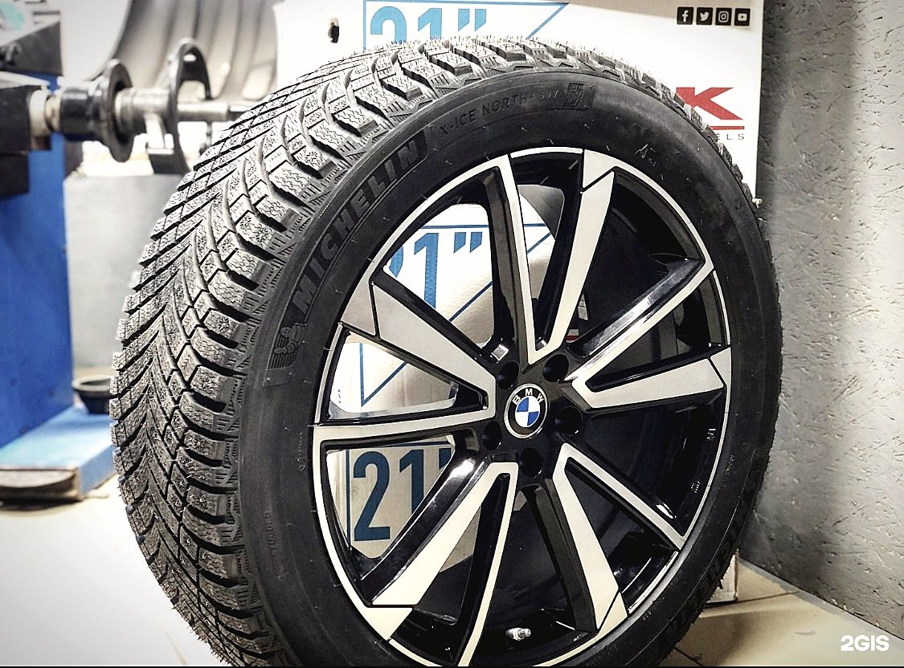
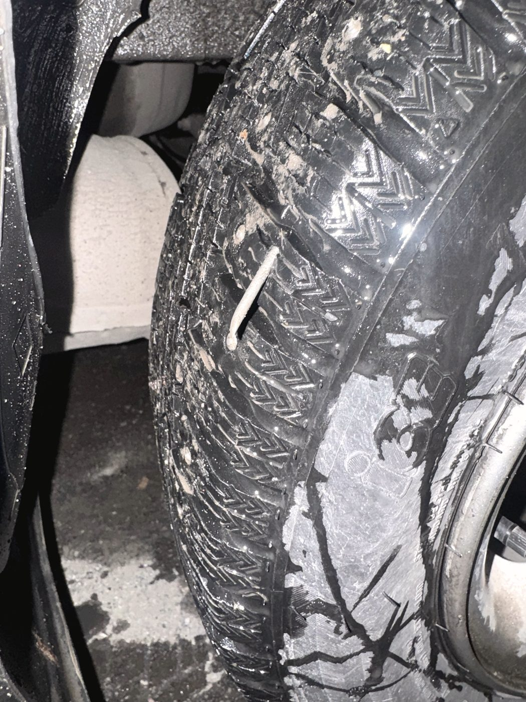
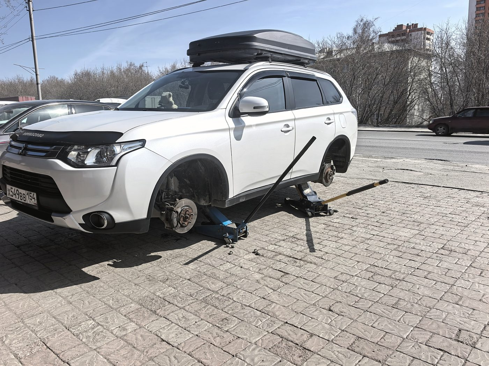
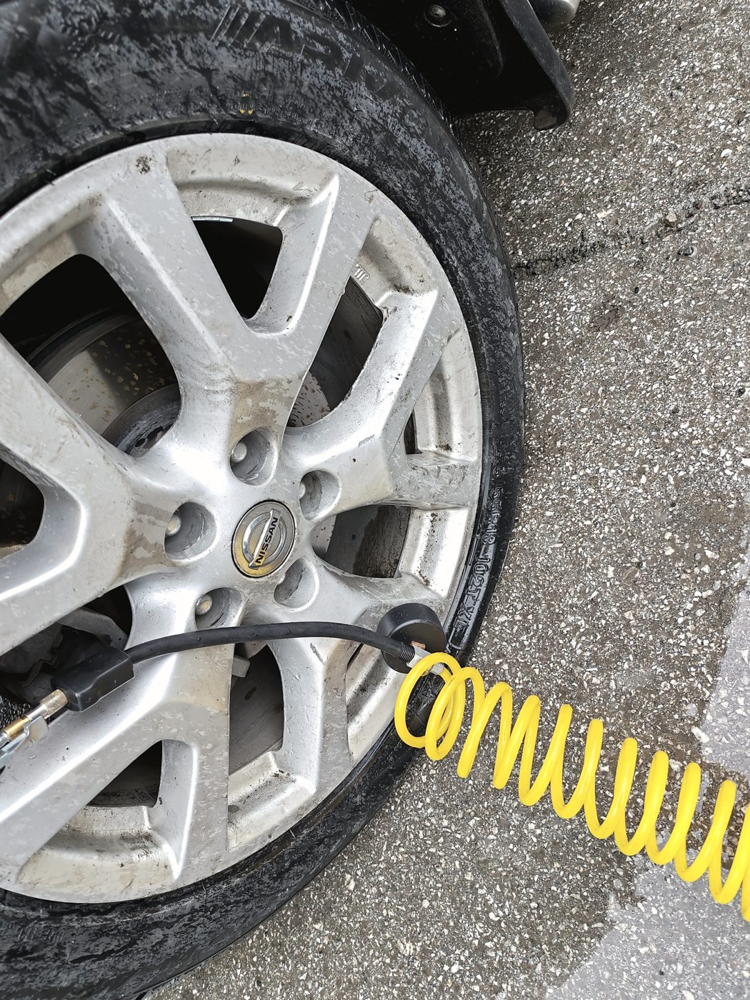
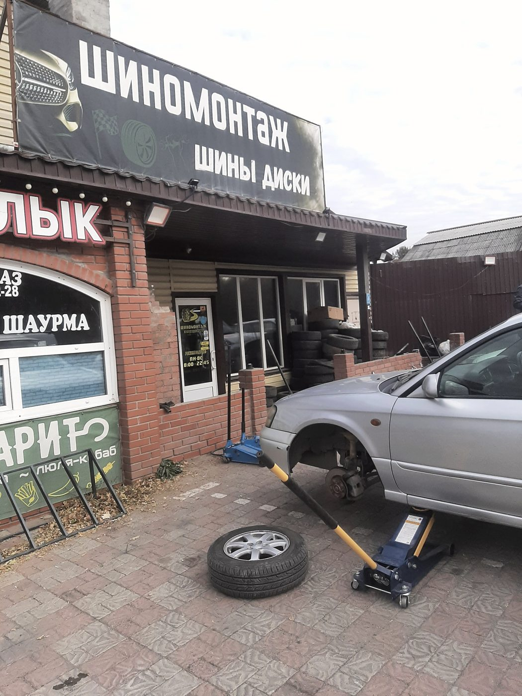

Шиномонтажная мастерская · Немировича-Данченко, 15 · Новосибирск
Дождались,
хотя уже закрывались
Человек ехал в город на эвакуаторе с убитым колесом и обзванивал мастерские. Договориться получилось только здесь — и его дождались, хотя рабочий день уже кончился. Переобувка при этом занимает минут двадцать.

Про время
Колесо не спрашивает,
который час
Прокол случается вечером, в дождь и за сто километров от дома. Поэтому мы работаем до девяти вечера каждый день — и если человек уже едет, стараемся дождаться.
Скажите, что случилось и когда будете. Если едете на эвакуаторе или на докатке — предупредите, подготовимся.
Так было с клиентом, который вёз убитое колесо за 300 километров. Ждали в ущерб своему времени, потому что бросать человека на дороге неправильно.
Ремонт колёс
Колесо чаще всего
можно спасти
Первое, что слышит человек с повреждённым колесом, — «покупай новое». Мы сначала смотрим: половина случаев чинится, и обходится это в разы дешевле нового ската.
Самая частая находка. Достаём, смотрим место прокола и ставим жгут или латку — колесо служит дальше.
Многие считают это приговором. Смотрим глубину и место: часто ремонтируется и держит давление.
Биение в руле обычно не от резины, а от погнутого диска. Правим и прокатываем, потом балансируем.
Ошиповка — полная и ремонтная. Перед сезоном дешевле дошиповать, чем менять комплект.
Работы
Что делаем
Переобувка и балансировка
Снять, разбортировать, поставить, отбалансировать. Работаем с несколькими машинами сразу, поэтому очередь движется быстро.
Ремонт порезов и проколов
Жгут, латка или камера — выбираем по месту повреждения и говорим цену до начала.
Правка и прокатка дисков
Литьё и штамповка после ям. После правки обязательно балансируем.
Ошиповка шин
Полная и ремонтная, замена вылетевших шипов перед сезоном.
Хранение шин
Второй комплект остаётся у нас до сезона — не нужно везти четыре колеса на балкон или в гараж.
Подбор и продажа шин
Легковые шины в наличии и под заказ. Подберём под машину и бюджет.
Доставка
Купленные шины привезём. Заранее скажите адрес и размер.



Отзывы · 4,8 из 5 по 266 оценкам в 2ГИС
«Меня дождались в ущерб своего времени — они уже должны были закрываться»
Макс Алексеев · ехал в Новосибирск на эвакуаторе за 300 км
Парни очень оперативно работают, учитывая, что работают сразу с несколькими машинами. Переобули минут за 20, однозначно 5 звёзд.
Макс Алексеев · 14 апреля 2024
Ребята молодцы, делают быстро и самое главное качественно, цены в сезон приемлемые. Все парни активные, никто не сидит без дела. Кстати, оставила шины на хранение — очень удобно.
Катерина Верес · 30 сентября 2025



Контакты
Немировича-Данченко, 15
Ленинский район, Новосибирск